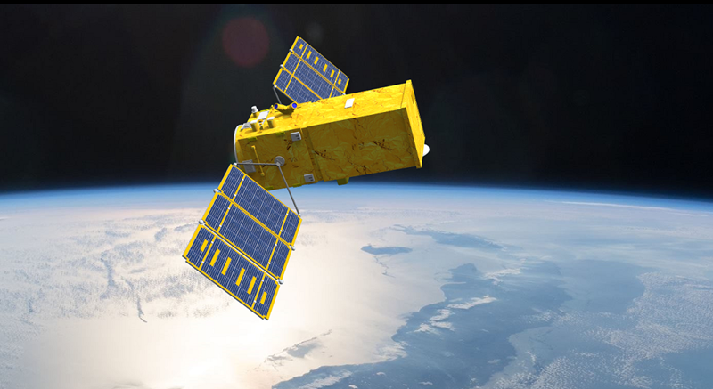
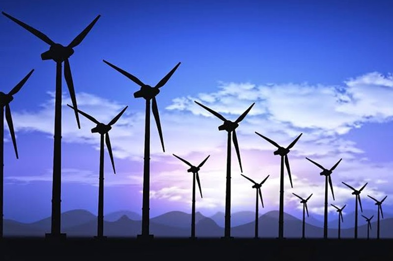
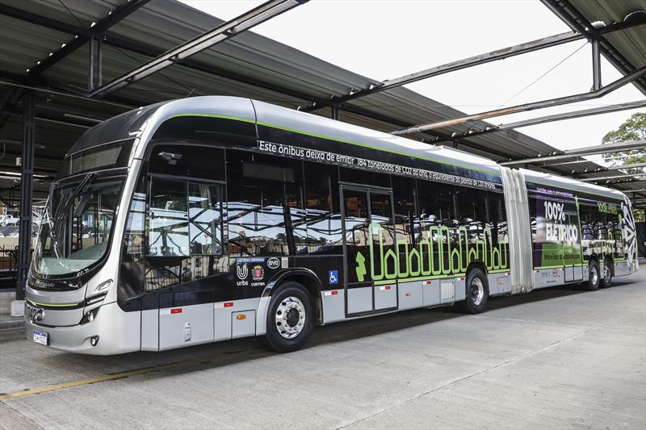
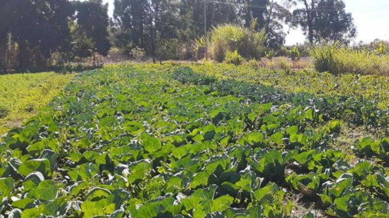

Onde as ações sustentáveis já estão acontecendo?
Veja algumas regiões do Brasil que estão se destacando por suas ações em prol do meio ambiente e do combate às mudanças climáticas.
🌳 Amazônia Legal
Programas de reflorestamento, proteção de áreas indígenas e projetos de monitoramento por satélite estão em execução.
⚡ Nordeste – Energia Renovável
O Nordeste brasileiro lidera a produção de energia eólica e solar no país, com projetos em estados como Bahia, Ceará e Rio Grande do Norte.
🚲 Sul – Mobilidade Sustentável
Cidades como Curitiba e Florianópolis estão investindo em transporte público eficiente, ciclovias e incentivos à mobilidade verde.
🧪 Sudeste – Inovação em Sustentabilidade
Centros de pesquisa em São Paulo e Minas Gerais promovem estudos sobre energias limpas, agricultura regenerativa e cidades inteligentes.

🌱 Centro-Oeste – Agroecologia e Cerrado
Projetos de agricultura sustentável no Cerrado e uso consciente da água têm ganhado destaque em Goiás e Mato Grosso do Sul.
